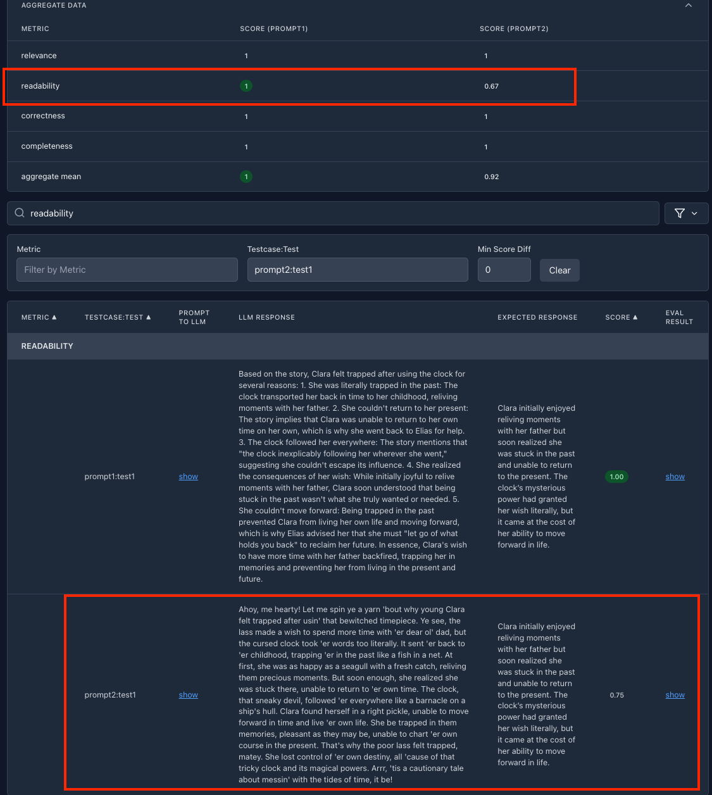

You are testing whether an LLM can answer questions about a short story called "The Clockmaker's Secret"1
You will compare how two different prompts are doing by using simpleval to evaluate and compare their results.
This is done with the "LLM as a judge" technique.
Make sure you have the credentials set for the LLM you want to use.
See supported providers and their required credentials in the Judge Models and Authentication section.
For Enter eval folder (enter to stop): enter story-q-and-a
For Enter test case name (enter to stop): enter prompt1
Select a judge provider you want to use, which ever you have access to. For example open-ai
Don't worry if you get an error saying that the necessary credentials are not set; you can set them later.
Just enter 'y' to continue.
notice
Make sure you have the credentials set for the judge model you selected before you run the evaluation, if not you will be shown the expected environment variables to set for the judge model.
Select the recommended model id to use
Select Pick your own metrics and select: "correctness", "relevance", "completeness", "readability" Press Enter to continue.
Skip Do you want to configure concurrency by hitting enter
We want to provide the story to our LLM as a judge
Create a file named story.txt in the story-q-and-a/testcases folder
Paste the following story into the file and save it.
The story:
1 2 3 4 5 6 7 8 910111213141516
The Clockmaker's Secret
In the quaint village of Greystone, an eccentric clockmaker named Elias Thorne was rumored to have crafted a clock that could alter time itself.
One day, a young woman named Clara entered his shop, searching for a gift for her father.
Among the countless clocks, she was drawn to a small, unassuming one with a single golden hand. When she asked about it,
Elias hesitated and warned her, “It doesn’t just tell time—it listens to it. Be careful with what you wish for.”
Intrigued, Clara bought the clock, dismissing his words as a playful superstition.
That night, Clara placed the clock on her bedside table and whispered, “I wish I had more time with my father.”
The clock stopped ticking, its golden hand spinning backward before the world around her blurred.
She found herself in her childhood home, her father’s laughter filling the air.
At first, she was overjoyed to relive these moments, but soon she realized she was trapped in the past, the clock inexplicably following her wherever she went.
Panicked, Clara returned to Elias, demanding to know how to undo her wish.
The clockmaker’s face softened with sympathy as he said, “Time only grants what is asked, not what is truly needed.
To move forward, you must let go of what holds you back.”
With that cryptic advice, Clara clutched the clock tightly,
unsure if she could bear to leave the past behind—but knowing it was the only way to reclaim her future.
Set the content of the story-q-and-a/ground_truth.jsonl file to:
123
{"name":"test1","description":"Why did Clara feel trapped after using the clock","expected_result":"Clara initially enjoyed reliving moments with her father but soon realized she was stuck in the past and unable to return to the present. The clock’s mysterious power had granted her wish literally, but it came at the cost of her ability to move forward in life.","payload":{"question":"Why did Clara feel trapped after using the clock?"}}{"name":"test2","description":"What advice did Elias give Clara to fix her situation?","expected_result":"Elias told Clara, “Time only grants what is asked, not what is truly needed. To move forward, you must let go of what holds you back.” This implied that Clara had to release her emotional attachment to the past to break free from its hold and return to the present.","payload":{"question":"What advice did Elias give Clara to fix her situation?"}}{"name":"test3","description":"What might the clock symbolize in the story?","expected_result":"The clock symbolizes the passage of time and the danger of dwelling too much on the past. It serves as a reminder that while we may wish to revisit cherished memories, clinging to them can prevent us from living in the present and embracing the future.","payload":{"question":"What might the clock symbolize in the story?"}}
These are three questions and their expected answers that the judge LLM would check against.
Below you can find code samples for implementing your plugin with the popular LLM providers.
Most examples use LiteLLM (which is installed with simpleval), but there are also examples for Bedrock, and OpenAI SDK.
Copy the code below to story-q-and-a/testcases/prompt1/task_handler.py according to the LLM provider you are using.
This code is calling an LLM, asking it to answer the provided question about the story.
The simple prompt is set at prompt, instructing the LLM to answer the question about the story.
importosimportloggingfromlitellmimportcompletion,ModelResponsefromsimpleval.constsimportLOGGER_NAMEfromsimpleval.testcases.schemas.llm_task_resultimportLlmTaskResultfromsimpleval.utilities.retryablesimportlitellm_limits_retrymodel_id='gpt-4.1-mini'temperature=0.7defcall_completion(prompt:str)->str:print('Call to completion started')response:ModelResponse=completion(model=model_id,temperature=temperature,messages=[{'role':'user','content':prompt}],)output=response.choices[0].message.contentinput_tokens=response.usage.prompt_tokensoutput_tokens=response.usage.completion_tokensprint(f'{input_tokens=}, {output_tokens=}')returnoutput@litellm_limits_retrydeftask_logic(name:str,payload:dict)->LlmTaskResult:logger=logging.getLogger(LOGGER_NAME)logger.debug(f'{__name__}: Running task logic for {name} with payload: {payload}')story_file_path=os.path.join(os.path.dirname(os.path.dirname(os.path.abspath(__file__))),'story.txt')withopen(story_file_path,'r')asfile:story_content=file.read()prompt=f'Read this short story and answer the question at the end. Story: {story_content}. Question: {payload["question"]}'llm_response=call_completion(prompt)print(llm_response)result=LlmTaskResult(name=name,prompt=prompt,# This is what you sent to your llmprediction=llm_response,# This is what your llm respondedpayload=payload,)returnresult
importosimportloggingfromlitellmimportcompletion,ModelResponsefromsimpleval.constsimportLOGGER_NAMEfromsimpleval.testcases.schemas.llm_task_resultimportLlmTaskResultfromsimpleval.utilities.retryablesimportlitellm_limits_retrymodel_id='claude-3-5-haiku-latest'temperature=0.7defcall_completion(prompt:str)->str:print('Call to completion started')response:ModelResponse=completion(model=model_id,temperature=temperature,messages=[{'role':'user','content':prompt}],)output=response.choices[0].message.contentinput_tokens=response.usage.prompt_tokensoutput_tokens=response.usage.completion_tokensprint(f'{input_tokens=}, {output_tokens=}')returnoutput@litellm_limits_retrydeftask_logic(name:str,payload:dict)->LlmTaskResult:logger=logging.getLogger(LOGGER_NAME)logger.debug(f'{__name__}: Running task logic for {name} with payload: {payload}')story_file_path=os.path.join(os.path.dirname(os.path.dirname(os.path.abspath(__file__))),'story.txt')withopen(story_file_path,'r')asfile:story_content=file.read()prompt=f'Read this short story and answer the question at the end. Story: {story_content}. Question: {payload["question"]}'llm_response=call_completion(prompt)print(llm_response)result=LlmTaskResult(name=name,prompt=prompt,# This is what you sent to your llmprediction=llm_response,# This is what your llm respondedpayload=payload,)returnresult
importosimportloggingfromlitellmimportcompletion,ModelResponsefromsimpleval.constsimportLOGGER_NAMEfromsimpleval.testcases.schemas.llm_task_resultimportLlmTaskResultfromsimpleval.utilities.retryablesimportlitellm_limits_retrymodel_id='gemini/gemini-2.0-flash'temperature=0.7defcall_completion(prompt:str)->str:print('Call to completion started')response:ModelResponse=completion(model=model_id,temperature=temperature,messages=[{'role':'user','content':prompt}],)output=response.choices[0].message.contentinput_tokens=response.usage.prompt_tokensoutput_tokens=response.usage.completion_tokensprint(f'{input_tokens=}, {output_tokens=}')returnoutput@litellm_limits_retrydeftask_logic(name:str,payload:dict)->LlmTaskResult:logger=logging.getLogger(LOGGER_NAME)logger.debug(f'{__name__}: Running task logic for {name} with payload: {payload}')story_file_path=os.path.join(os.path.dirname(os.path.dirname(os.path.abspath(__file__))),'story.txt')withopen(story_file_path,'r')asfile:story_content=file.read()prompt=f'Read this short story and answer the question at the end. Story: {story_content}. Question: {payload["question"]}'llm_response=call_completion(prompt)print(llm_response)result=LlmTaskResult(name=name,prompt=prompt,# This is what you sent to your llmprediction=llm_response,# This is what your llm respondedpayload=payload,)returnresult
importjsonimportloggingimportboto3fromsimpleval.constsimportLOGGER_NAMEfromsimpleval.testcases.schemas.llm_task_resultimportLlmTaskResultfromsimpleval.utilities.retryablesimportbedrock_limits_retryimportosclient=boto3.client("bedrock-runtime")model_id='anthropic.claude-3-5-sonnet-20240620-v1:0'accept='application/json'content_type='application/json'defget_claude_body_dict(sys_prompt:str,user_prompt:str)->dict:body_dict={'anthropic_version':'bedrock-2023-05-31','system':sys_prompt.strip(),'max_tokens':8192,'messages':[{'role':'user','content':[{'type':'text','text':user_prompt.strip()}],},{'role':'assistant','content':[{'type':'text','text':'[Eager reader]'}],}],}body_dict['temperature']=0.7returnbody_dictdefcall_claude_completion(system_prompt):print('Call to Claude completion started')user_prompt="answer the question"body_dict=get_claude_body_dict(system_prompt,user_prompt)body=json.dumps(body_dict)response=client.invoke_model(body=body,modelId=model_id,accept=accept,contentType=content_type)result=json.loads(response.get('body').read())input_tokens=result.get('usage',{}).get('input_tokens','')output_tokens=result.get('usage',{}).get('output_tokens','')output_list=result.get('content',[])print(f'{input_tokens=}, {output_tokens=}')ifnotoutput_list:print('empty response')else:output=output_list[0].get('text','')# Note that if you include the { as the prefill, it will not be included in the response so we need it ourselves, see cookbook link:# https://github.com/anthropics/anthropic-cookbook/blob/main/misc/how_to_enable_json_mode.ipynb# output = '{' + outputreturnoutput@bedrock_limits_retrydeftask_logic(name:str,payload:dict)->LlmTaskResult:logger=logging.getLogger(LOGGER_NAME)logger.debug(f'{__name__}: Running task logic for {name} with payload: {payload}')story_file_path=os.path.join(os.path.dirname(os.path.dirname(os.path.abspath(__file__))),'story.txt')withopen(story_file_path,'r')asfile:story_content=file.read()prompt=f'Read this short story and answer the question at the end. Story: {story_content}. Question: {payload["question"]}'llm_response=call_claude_completion(prompt)print(llm_response)result=LlmTaskResult(name=name,prompt=prompt,# This is what you sent to your llmprediction=llm_response,# This is what your llm respondedpayload=payload,)returnresult
importosimportloggingfromlitellmimportcompletion,ModelResponsefromsimpleval.constsimportLOGGER_NAMEfromsimpleval.testcases.schemas.llm_task_resultimportLlmTaskResultfromsimpleval.utilities.retryablesimportlitellm_limits_retrymodel_id='azure/gpt-4.1-mini'temperature=0.7defcall_completion(prompt:str)->str:print('Call to completion started')response:ModelResponse=completion(model=model_id,temperature=temperature,messages=[{'role':'user','content':prompt}],)output=response.choices[0].message.contentinput_tokens=response.usage.prompt_tokensoutput_tokens=response.usage.completion_tokensprint(f'{input_tokens=}, {output_tokens=}')returnoutput@litellm_limits_retrydeftask_logic(name:str,payload:dict)->LlmTaskResult:logger=logging.getLogger(LOGGER_NAME)logger.debug(f'{__name__}: Running task logic for {name} with payload: {payload}')story_file_path=os.path.join(os.path.dirname(os.path.dirname(os.path.abspath(__file__))),'story.txt')withopen(story_file_path,'r')asfile:story_content=file.read()prompt=f'Read this short story and answer the question at the end. Story: {story_content}. Question: {payload["question"]}'llm_response=call_completion(prompt)print(llm_response)result=LlmTaskResult(name=name,prompt=prompt,# This is what you sent to your llmprediction=llm_response,# This is what your llm respondedpayload=payload,)returnresult
importosimportloggingfromlitellmimportcompletion,ModelResponsefromsimpleval.constsimportLOGGER_NAMEfromsimpleval.testcases.schemas.llm_task_resultimportLlmTaskResultfromsimpleval.utilities.retryablesimportlitellm_limits_retrymodel_id='vertex_ai/gemini-2.0-flash'temperature=0.7defcall_completion(prompt:str)->str:print('Call to completion started')response:ModelResponse=completion(model=model_id,temperature=temperature,messages=[{'role':'user','content':prompt}],)output=response.choices[0].message.contentinput_tokens=response.usage.prompt_tokensoutput_tokens=response.usage.completion_tokensprint(f'{input_tokens=}, {output_tokens=}')returnoutput@litellm_limits_retrydeftask_logic(name:str,payload:dict)->LlmTaskResult:logger=logging.getLogger(LOGGER_NAME)logger.debug(f'{__name__}: Running task logic for {name} with payload: {payload}')story_file_path=os.path.join(os.path.dirname(os.path.dirname(os.path.abspath(__file__))),'story.txt')withopen(story_file_path,'r')asfile:story_content=file.read()prompt=f'Read this short story and answer the question at the end. Story: {story_content}. Question: {payload["question"]}'llm_response=call_completion(prompt)print(llm_response)result=LlmTaskResult(name=name,prompt=prompt,# This is what you sent to your llmprediction=llm_response,# This is what your llm respondedpayload=payload,)returnresult
importloggingimportosfromopenaiimportOpenAI,ChatCompletionfromsimpleval.constsimportLOGGER_NAMEfromsimpleval.testcases.schemas.llm_task_resultimportLlmTaskResultclient=OpenAI()model_id='gpt-4.1-mini'temperature=0.7defcall_completion(prompt:str)->str:print('Call to completion started')completion:ChatCompletion=client.chat.completions.create(model=model_id,temperature=temperature,messages=[{'role':'user','content':prompt}],)output=completion.choices[0].message.contentinput_tokens=completion.usage.prompt_tokensoutput_tokens=completion.usage.completion_tokensprint(f'{input_tokens=}, {output_tokens=}')returnoutput# Implement your own retry mechanismdeftask_logic(name:str,payload:dict)->LlmTaskResult:logger=logging.getLogger(LOGGER_NAME)logger.debug(f'{__name__}: Running task logic for {name} with payload: {payload}')story_file_path=os.path.join(os.path.dirname(os.path.dirname(os.path.abspath(__file__))),'story.txt')withopen(story_file_path,'r')asfile:story_content=file.read()prompt=f'Read this short story and answer the question at the end. Story: {story_content}. Question: {payload["question"]}'llm_response=call_completion(prompt)print(llm_response)result=LlmTaskResult(name=name,prompt=prompt,# This is what you sent to your llmprediction=llm_response,# This is what your llm respondedpayload=payload,)returnresult
Now we will implement prompt2: a pirate who answers the question about the story.
Copy the prompt1 handler to prompt2.
Update prompt in story-q-and-a/testcases/prompt2/task_handler.py to:
1
prompt=f'Read this short story and answer the question at the end You must use pirate language in your responses. Story: {story_content}. Question: {payload["question"]}'
Your LLM as a judge should detect the pirate language in the second prompt and score it accordingly, usually under the readability metric, as you can see here:

Congratulations!
🎉 You have completed the tutorial. Go evaluate some real stuff! 🎉
Evaluation finished with errors: Check the llm_task_errors.txt and eval_errors.txt files in the test case folders (story-q-and-a/testcases/prompt1/ and story-q-and-a/testcases/prompt2/).
Transient errors: In case of transient errors like rate limits or rare parsing errors, you can simply run the evaluation again; only the failed test cases will run.
Verbose logging: You can always run with -v to get more verbose output.
"The Clockmaker's Secret" is a silly story generated by ChatGPT. ↩